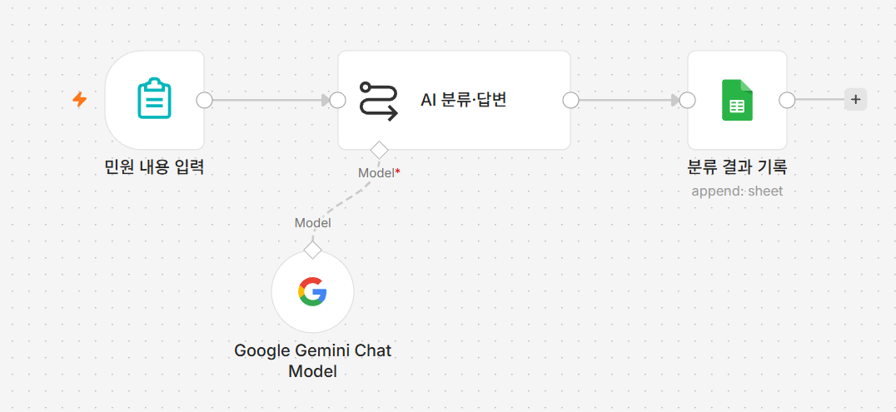
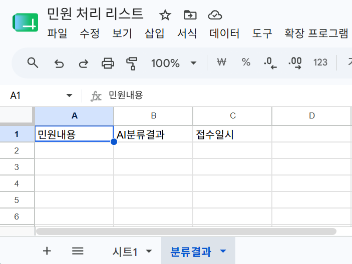
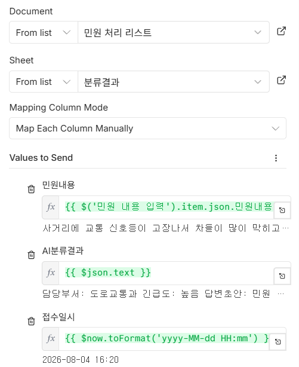
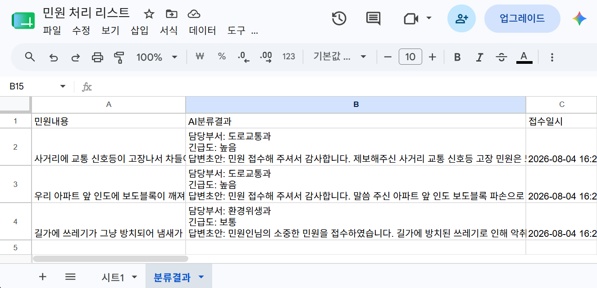

P3 AI 민원 자동 분류·답변 초안
AI가 분류하고 초안을 씁니다
왜 이게 필요한가
민원이 한 건 들어오면 담당자가 가장 먼저 하는 일은 "이건 우리 과 일인가?"를 판단하는 것입니다. 도로 파임은 도로교통과, 악취는 환경위생과, 이런 식으로요. 그다음 "얼마나 급한가"를 가늠하고, 마지막으로 답변을 씁니다. "안녕하십니까. 귀하께서 제기하신 민원에 대하여…"로 시작하는 그 문장을 민원 건마다 처음부터 다시 씁니다.
앞의 두 가지는 판단이고 마지막 하나는 글쓰기인데, 셋 다 AI가 초벌로 해낼 수 있는 일입니다. 중요한 건 AI가 결정하는 게 아니라 초안을 낸다는 점입니다. 담당자는 백지에서 시작하는 대신 이미 채워진 칸을 보고 맞으면 넘기고 틀리면 고칩니다. 이 차이가 생각보다 큽니다.
그래서 이번에는 민원을 접수하면 AI가 담당부서·긴급도·답변초안 세 가지를 한 번에 만들어 시트에 남기게 합니다. 시트를 열면 민원 원문 옆에 AI가 낸 초안이 나란히 쌓여 있게 됩니다.
이번 시간에 만들 것
폼으로 접수된 민원을 AI가 담당부서와 긴급도로 분류하고 답변 초안까지 작성해, 민원 원문과 함께 시트에 기록하는 워크플로우를 만듭니다.

이번 프로젝트의 흐름
이번 시간에 새로 만드는 노드
노드는 셋뿐이지만 마지막 노드에서 두 곳의 값을 동시에 씁니다 — AI가 쓴 분류 결과와, 그보다 앞에 있는 폼에 입력된 민원 원문입니다.
따라하기
- 시트에 분류결과 탭 만들기
1일차에 쓰던 스프레드시트를 열고, 화면 맨 아래 시트 탭 줄에서
+를 눌러 탭을 하나 추가합니다. 새 탭의 이름을 더블클릭해분류결과로 바꿉니다.그 탭의 1행(맨 윗줄)에 아래 세 칸을 정확히 이 순서로 입력합니다.
1일차 준비물에서 했던 것과 같은 작업입니다. 철자가 하나라도 다르면(띄어쓰기 포함) 뒤에서 값이 엉뚱한 칸에 들어가거나 비어 보입니다.민원내용·AI분류결과·접수일시[그림 P3-2] 머리글 세 개를 넣은 분류결과 탭
- 새 워크플로우 만들기
n8n으로 돌아와 새 워크플로우를 만들고 이름을
P3 AI 민원 자동 분류로 바꿉니다. - 폼 트리거 추가하기
빈 캔버스 가운데
+를 눌러 폼 트리거를 고르고 아래처럼 채웁니다.Form Title→민원 내용 입력
Form Description→분류할 민원 내용을 입력하세요.Form Fields아래에 입력 칸을 하나만 만듭니다.필드 이름(
필드 이름Field Label) →민원내용
입력 형태(Element Type) → 여러 줄 입력(Textarea)
필수(Required Field) → 켭니다민원내용은 띄어쓰기 없이 붙여 씁니다. 뒤에서 이 이름을 그대로 써야 하기 때문입니다. - AI 분류 노드 추가하기
폼 트리거 오른쪽
+를 누르고Basic LLM Chain을 고릅니다.Source for Prompt를Define below로 바꾸고 아래를 붙여넣습니다.당신은 민원 분류 담당 공무원입니다. 아래 민원 내용을 읽고 다음을 작성하세요. 1) 담당부서: [도로교통과 / 환경위생과 / 복지정책과 / 건축과 / 기타] 중 하나 2) 긴급도: [높음 / 보통 / 낮음] 중 하나 3) 답변초안: 민원인에게 보낼 정중한 답변 초안 (3~4문장, 존댓말) 아래 형식 그대로만 출력하세요. 담당부서: 긴급도: 답변초안: [민원 내용] {{ $json.민원내용 }}"형식 그대로만 출력하세요"가 중요한 이유 이 문장이 없으면 AI가 "네, 분석해 드리겠습니다!" 같은 인사말을 앞에 붙이거나 설명을 덧붙입니다. 사람이 읽을 때는 괜찮지만 시트에 그대로 쌓이면 지저분해집니다. AI에게 형식을 정해주는 것은 결과를 어딘가에 저장할 때 특히 중요합니다. - Gemini 모델 붙이고 모델 이름 고르기
AI 분류·답변노드 아래쪽 작은+를 눌러Google Gemini Chat Model을 고릅니다. 자격증명은 기존 것을 고르고, 모델 목록에서models/gemini-2.5-flash를 직접 고릅니다. - 시트 기록 노드 추가하기
AI 분류·답변오른쪽+를 누르고Google Sheets를 고릅니다. 동작은 1일차 03강과 같은Append Row in Sheet(행 추가)를 고릅니다.자격증명을 고른 뒤
Document에서 1일차에 쓰던 그 시트를 고르고,Sheet에서는 방금 만든분류결과탭을 고릅니다.Mapping Column Mode를Map Each Column Manually(직접 지정)로 두면 머리글 세 개가 각각 칸으로 나타납니다. - 세 칸 채우기 — 여기가 이번 시간의 핵심입니다
세 칸 각각의 표현식 전환 스위치를 눌러
Expression모드로 바꾸고 아래를 입력합니다.민원내용→{{ $('민원 내용 입력').item.json.민원내용 }}
AI분류결과→{{ $json.text }}
접수일시→{{ $now.toFormat('yyyy-MM-dd HH:mm') }}왜 첫 칸만 표기가 다른가요1일차 04강에서 "시트에 기록 노드를 지나면 민원 데이터가 사라진다"고 배웠습니다. 여기서도 똑같은 일이 벌어집니다.
AI 분류·답변노드를 지나는 순간 흘러가는 값은 AI가 쓴 글 하나로 바뀌고, 폼에 입력했던 민원 원문은 사라집니다. 그래서{{ $json.민원내용 }}이라고 쓰면 빈 칸이 됩니다.1일차에서는 노드를 이어 붙이지 않고 갈라놓는 것으로 해결했습니다. 이번에는 다른 방법을 씁니다 —
$('민원 내용 입력')은 "민원 내용 입력이라는 이름의 노드로 거슬러 올라가라"는 뜻입니다. 몇 칸 앞이든 이름만 알면 그 노드의 값을 그대로 꺼내올 수 있습니다.노드 이름 철자가 한 글자라도 다르면 실행이 실패합니다. 폼 트리거 노드 제목이 정확히
민원 내용 입력인지 확인하세요. 이름을 바꿀 거라면 이 표현식도 같이 바꿔야 합니다.[그림 P3-3] 세 칸에 표현식을 입력한 시트 노드
- 노드 이름 정리하기
노드 제목을 각각 더블클릭해 아래 이름으로 바꿉니다.
폼 트리거 이름은 이미민원 내용 입력·AI 분류·답변·분류 결과 기록민원 내용 입력일 수 있습니다. 앞 단계의 표현식이 이 이름을 가리키므로 바꾸지 마세요.
실행하고 확인하기
아래쪽 Execute workflow를 누른 뒤
민원 내용 입력 노드를 열어 임시 폼 주소를 확인하고,
새 탭에서 엽니다.
민원 내용 칸에 아무 문장이나 적어 제출합니다. 예를 들어:
우리 아파트 앞 인도에 보도블록이 깨져 있어 어르신들이 자주 걸려 넘어집니다. 빨리 고쳐주세요.
제출하고 나서 시트의 분류결과 탭을 열어봅니다. 새 줄이
하나 추가되어 있고, 첫 칸에 방금 적은 민원 원문이, 둘째 칸에
담당부서: 도로교통과로 시작하는 AI 결과가, 셋째 칸에
오늘 날짜와 시각이 들어 있으면 성공입니다.

내용을 바꿔가며 두세 번 더 제출해보세요. "가로등이 안 들어와요", "기초생활수급 신청 방법을 알고 싶습니다"처럼 성격이 다른 민원을 넣으면 담당부서가 달라지는 것을 볼 수 있습니다.
안 될 때
민원내용 칸이 비어 있습니다 —
{{ $json.민원내용 }}이라고 적었을 가능성이 큽니다.
{{ $('민원 내용 입력').item.json.민원내용 }}으로
고치세요. 이미 그렇게 적었다면 폼 트리거 노드의 제목이 정확히
민원 내용 입력인지 확인하세요 — 띄어쓰기까지
같아야 합니다.
"노드를 찾을 수 없다"는 오류가 납니다 — 위와 같은 원인입니다.
$('...') 안의 이름과 실제 노드 제목이 다릅니다.
캔버스에서 노드 제목을 복사해 그대로 붙여넣으면 확실합니다.
시트에 줄은 생기는데 칸이 전부 비어 있습니다 — 세 칸의 표현식 전환 스위치를 누르지 않았습니다. 세 칸을 각각 따로 눌러야 합니다. 한 칸에서 누른 것이 다른 칸까지 적용되지 않습니다.
값이 엉뚱한 칸에 들어갑니다 — 분류결과 탭의
머리글 철자가 민원내용 ·
AI분류결과 · 접수일시와
정확히 같은지 확인하세요.
AI 결과에 인사말이나 설명이 잔뜩 붙습니다 — 프롬프트의
아래 형식 그대로만 출력하세요. 줄을 빠뜨렸습니다.
그 줄을 넣고 다시 실행해보세요.
Sheet 목록에 분류결과 탭이 안 보입니다 — 시트에서 탭을 만든 뒤 n8n 화면을 새로고침하지 않았습니다. n8n은 목록을 한 번 읽어두고 재사용하므로, 브라우저를 새로고침하고 다시 목록을 열어보세요.
이번 프로젝트 워크플로우 받기
따라오다 막혔다면 이 파일을 받아 n8n에서 불러오면 이어서 진행할 수 있습니다.
Google Gemini Chat Model과
분류 결과 기록 두 노드를 각각 열어 자격증명을 다시
골라야 합니다. 그리고 분류 결과 기록의
Document 칸에는
여기에_본인_시트_ID 자리표시자가 들어 있으므로 본인
시트로 바꿔야 합니다. 탭 이름은 분류결과로 들어 있으니,
시트에 그 이름의 탭과 머리글 세 개를 먼저 만들어두어야 합니다.